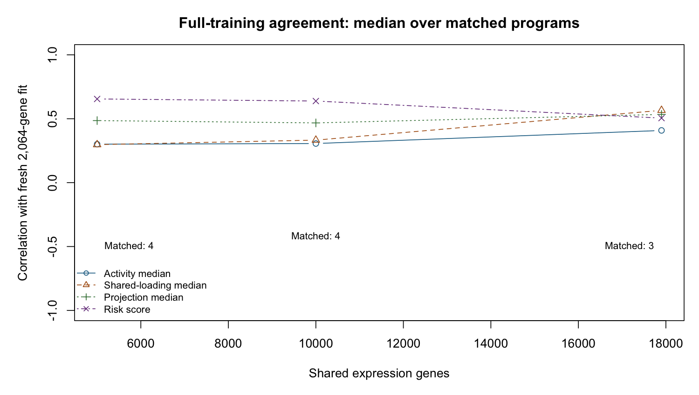

12 October 16, 2026
Executive summary
- The benchmark is retained. Single-modality external C remains 0.627 with \(\alpha_F=0\); the joint benchmark has ICGC primary C=0.685. No validated survival-supervised replacement has been established.
- The full expression-count study is complete. All 24 fixed-K7 fits converge through 17,900 shared genes. Conditional CV performance does not clearly improve, and program agreement changes.
- The requested CpG mean/SD inventory is complete. It describes 305,492 probes; the unchanged model-eligible universe has 305,352. Neither supplied filter nor an SD cutoff has been adopted.
- The 25k-CpG arithmetic failure is repaired, but fitting remains unstable. The same case reaches its 500-iteration cap with extreme predictors. Training C=0.984 is not a validated gain.
- The corrected complete-cycle diagnostic is complete. Posterior steps pass the local ascent check in the observed simulation; loading-prior refits and working refreshes can lose the reference objective. This supports prior-consistency review before damping or weights, without establishing a convergent remedy.
This chapter adapts the advisor progress report into the notebook and adds the October 16 mathematical review. Earlier chapters describe their own checkpoints; the findings below supersede any earlier claim of universal convergence or successful final supervision.
12.1 What the work has established
The approved October 14 write-up remains the project’s benchmark. Its single-block model has mean external concordance 0.627 across five cohorts, with \(\alpha_F=0\): survival informs the coefficients but not the loading updates. The matched expression–methylation framework has ICGC primary-PDAC concordance 0.685, without demonstrated improvement over expression alone. Neither result has been replaced.
Since that write-up, the experiments have produced positive evidence that survival-informed fitting can recover a low-variance prognostic program in simulation, a clean simulation comparator panel, and reproducible diagnoses of real-data instability. They have not established a final supervised method satisfying convergence, rank selection and external performance requirements. Several central feature-sensitivity requests are still open.
| October 2 request | Evidence available | Status |
|---|---|---|
| Unified methods/results/biology write-up | Approved interim PDF and reproducible frozen results | Complete as an interim account |
| Survival shapes loadings \(F\) | Implemented experimentally; replicated recovery evidence | Partial; adoption requirements fail |
| More features at fixed \(K\) | Full-range expression curve through17,900 shared genes | Expression complete; CpG/joint curves remain open |
| Probe-wise methylation variability | Full 305,492-probe observed-value inventory and SD histograms | Complete descriptively; filter choice remains open |
| Parsimonious retained programs | Protected/full-state pruning evaluated and rejected | Rank selection unresolved |
| Multimodal value | Methylation-dominant and shared molecular structure | Predictive benefit and validated added biology unproven |
What is concretely solved. Dead point-mass programs no longer receive survival protection in the opt-in pruning rule. Full posterior information can be retained through opt-in pruning refits. Comparator rank-zero/rank-one cases and individual errors remain in denominators. The failed historical framework CV fold is exactly reproducible. A curvature experiment removes constant-risk predictions in its five candidate CV folds. These are specific software corrections and diagnoses, not proof of the complete scientific goal.
Current decision. Preserve the benchmark. Review working-step and prior/objective consistency before another large-feature fitting panel. The corrected complete-cycle diagnostic is reported below, with the invalid first summary preserved. No replacement model is adopted.
12.2 Does survival now influence \(F\)?
In experimental code, yes. The canonical single-modality update combines reconstruction and survival precision/signal contributions, \(A_F=A_{\rm gen}+w_S A_{\rm surv}\) and \(B_F=B_{\rm gen}+w_S B_{\rm surv}\), with \(w_S=1\) in the evaluated unweighted formulation. It also fixes projection scale and can use survival-informed initialization. The benchmark’s \(\alpha_F=0\) update omits those survival contributions. It remains close to factorization followed by survival regression in this important sense, although its stopping rule means its loadings need not equal a separately converged unsupervised fit.
12.2.1 Loading-update balance measured at saved states
A read-only audit separates the reconstruction and survival terms for each loading coordinate while holding the other moments fixed. The fractions below are medians across features, on a 0–1 scale: \(A_{\rm surv}/(A_{\rm gen}+A_{\rm surv})\) and \(|B_{\rm surv}|/(|B_{\rm gen}|+|B_{\rm surv}|)\). They exclude priors and are not variance explained, causal effects or a selected mixing weight.
| Saved fit / program | Block | Survival precision fraction | Survival numerator fraction |
|---|---|---|---|
| Frozen joint / 4 | Expression | \(2.03\times10^{-7}\) | \(7.27\times10^{-5}\) |
| Frozen joint / 4 | Methylation | \(9.00\times10^{-10}\) | \(4.40\times10^{-6}\) |
| Frozen expression-only / 7 | Expression | \(1.61\times10^{-7}\) | \(4.41\times10^{-5}\) |
| Profiled joint / 4 | Expression | \(8.22\times10^{-8}\) | \(6.62\times10^{-5}\) |
| Profiled joint / 4 | Methylation | \(4.26\times10^{-10}\) | \(4.81\times10^{-6}\) |
| Methylation-only 10k / 6 | Methylation | \(2.83\times10^{-7}\) | \(1.35\times10^{-4}\) |
All four fits use the same 144 TCGA patients and reach 500 iterations without convergence. These are isolated-coordinate likelihood contributions at capped terminal states, not sequential-update telemetry or proof of what caused collapse. The survival terms are small in these states; cumulative effects and empirical prior refits are not assessed by these fractions. Point-mass zero coefficients gate both survival terms; a zero mean alone need not do so when the coefficient second moment remains positive. Saved objective/removal components are reported separately and retain their prior/KL caveat.
12.2.2 Recovery evidence and its limits
The clean comparator rerun covers 40 simulated datasets and 200 method results, with no fitting errors. Its supervised arm recovers the planted program in 17/20 low-noise and 19/20 high-noise datasets. The four comparator arms do not recover the planted survival-active program under the specified joint criterion; EBMF alone has no fitted survival risk by design. Two supervised fits reach their iteration cap, and one high-noise prediction is constant. This is controlled simulation evidence, not an external-cohort result.
The latest, separately approved profiled-curvature experiment changes only an opt-in flag from the framework controls. Its simulations give:
| Model | Noise | Recovery /20 | False active | Reference false active | Converged /20 |
|---|---|---|---|---|---|
| Single | .25 | 18 | 1.35 | 1.15 | 19 |
| Single | 1 | 20 | .40 | .35 | 20 |
| Multimodal | .25 | 16 | .80 | .75 | 20 |
| Multimodal | 1 | 19 | .40 | .65 | 20 |
All recovery and false-positive criteria pass; Single convergence does not. The fixed beds are retained. These results do not establish validity for all feature counts, rank selection or the final Bayesian objective.
12.2.3 External performance has not established non-inferiority
The earlier selected supervised Single candidate, evaluated before Round 2, was compared with the frozen D4 reference on five cohorts (616 patients).
| Model | Mean external C | Delta versus D4 (95% interval) |
|---|---|---|
| Frozen D4, \(\alpha_F=0\) | .626699 | Reference |
| Earlier supervised candidate | .620725 | \(-.005974\;[-.031708,.020662]\) |
| Earlier \(\alpha_F=0\), point-Laplace L/F arm | .635304 | \(.008605\;[-.011261,.030378]\) |
The supervised arm fails the required lower limit \(>-0.02\). The earlier \(\alpha_F=0\) arm passes that requirement but does not supervise \(F\).
The latter arm changes loading priors as well as retaining \(\alpha_F=0\); it is not the frozen D4 fit. No model is selected from these external scores. No new Round 2 external cohort has been scored. Simulation recovery alone therefore does not close the supervision requirement.
12.3 Multimodal stability and the meaning of seven programs
The selected supervised multimodal fit collapsed to zero risk on TCGA. Training-only tracing identified shared coefficient-prior absorption. Replacing it by a fixed prior did not produce a converged, credibly prognostic real-data fit. An unchanged historical-framework CV fold also lost all coefficient means and second moments; the exact trace reproduces all 13 saved-state/history checks, locating the persistent loss at outer iteration 167, inner sweep 1.
The approved working-intercept profile removes a penalty on the arbitrary constant-risk direction. All five candidate CV risks are nonconstant, but all five reach 500 iterations, and credible-program counts are 0,1,0,0,0. Its own five-fold mean C is .563678. The original reference has one undefined score, so the prescribed five-finite-pair comparison remains ineligible. Single candidate CV C=.624776 versus .623985 passes its paired one-SE rule.
| Source/model, full TCGA | Training C | Credible programs | Final K | Converged |
|---|---|---|---|---|
| Frozen joint framework | .637768 | 1 | 7 | No |
| Frozen expression-only framework | .643559 | 1 | 7 | No |
| Frozen matching Single \(\alpha_F=0\) comparison | .593717 | — | — | — |
| Round 2 profiled joint framework | .639172 | 1 | 7 | No, 500 cap |
| Round 2 profiled Single framework | .651632 | 3 | 7 | No, 300 cap |
These are training quantities, not the external benchmark values .685/.627. The profile panel completes 92 new fits plus 10 cached references without execution errors or warnings. Eight new fits cap. It is not adopted.
12.3.1 Seven may be appropriate; the roles must justify the count
A joint fit can retain expression-dominant, methylation-dominant and prognostic programs, with overlapping roles. Fewer programs are not inherently better. The frozen joint fit already provides this descriptive role evidence:
| Program | Provisional interpretation | Expression share | Methylation share | Survival-active |
|---|---|---|---|---|
| 1 | Classical/gastric | 23.5% | 4.8% | No |
| 2 | Immune | 5.1% | 20.9% | No |
| 3 | Mixed, unlabelled | 31.5% | 0.3% | No |
| 4 | Basal-like versus classical | 6.2% | 4.5% | Yes |
| 5 | Normal versus activated stroma | 4.8% | 1.2% | No |
| 6 | Exocrine/acinar | 28.9% | 9.3% | No |
| 7 | Methylation-only | 0% | 58.9% | No |
All rows are from the frozen benchmark, not inferred labels for the newer fit. Shares normalize fitted rank-one squared norms within a modality; they are not additive variance explained or survival contributions. Labels are provisional; CpG annotation and enrichment were not performed.
The Single write-up’s four retained programs classify one K=7 fit; three other fitted programs are inactive under its operational thresholds. No deletion/refitting produced those four. Thus “7 versus 4” compares classification/model settings as well as modalities. The saved-fit role audit below addresses molecular/prognostic roles; redundancy and convergence still require resolution before interpreting this as excess joint rank.
12.3.2 Saved-fit role and agreement audit
The newer profiled joint fit preserves a recognizable mixture of molecular roles. Activity matching pairs all seven programs to the same benchmark indices; correlations range .832–.999. The sole credibly prognostic program remains program 4. No biological labels are transferred to the newer fit.
| Matched program | Expression norm share, benchmark / newer | Methylation norm share, benchmark / newer | Credible, benchmark / newer |
|---|---|---|---|
| 1 | 23.5% / 18.0% | 4.8% / 1.4% | No / No |
| 2 | 5.1% / 14.0% | 20.9% / 17.5% | No / No |
| 3 | 31.5% / 30.4% | 0.3% / 0% | No / No |
| 4 | 6.2% / 7.6% | 4.5% / 2.7% | Yes / Yes |
| 5 | 4.8% / 1.7% | 1.2% / 1.5% | No / No |
| 6 | 28.9% / 28.2% | 9.3% / 8.2% | No / No |
| 7 | 0% / 0% | 58.9% / 68.7% | No / No |
Both fits reached 500 iterations without convergence. Risk-score correlation is .954; program 4 activity correlation is .947, with expression/methylation loading correlations .916/.903. Program 7 remains methylation-only, with activity correlation .999 and methylation loading correlation .993. These are descriptive agreement measures, not evidence of incremental prediction or optimal K. Molecular norm shares are not additive PVE or survival fractions. Nonzero loading means are dense within the nonzero blocks; this audit does not validate probe-level feature selection. No new survival score or external outcome was used.
12.4 How much of the feature-count request is complete?
A limited earlier Single experiment varied the screening count per cohort, then intersected the selected features. Requested count and fitted dimension are different quantities:
| Requested/cohort | Shared genes | Mean training CV C | CV SE | Capped folds | Frozen D4 external C |
|---|---|---|---|---|---|
| 1,000 | 662 | .650200 | .017200 | 1/5 | — |
| 2,000 | 1,365 | .648933 | .022598 | 0/5 | — |
| 3,000 | 2,064 | .651199 | .023631 | 1/5 | — |
| 5,000 | 3,600 | .655413 | .027386 | 2/5 | — |
| Frozen D4 reference | 2,064 | — | — | — | .626699 |
This earlier curve uses the selected experimental Single configuration: canonicalization, \(w_S=1\), supervised initialization and a shared point-Laplace coefficient prior. It is not the frozen \(\alpha_F=0\) D4 configuration. All four full-training fits converge. The observed differences are small relative to their uncertainty and do not justify a new feature count. Screening/scaling preceded folds; these are conditional CV results, not a fully nested raw-data pipeline. The runner exited nonzero after saving its tables because its source was edited during execution. Saved fits/counts and summary arithmetic were independently verified; a clean-process rerun remains optional unfinished work. This limitation is not hidden.
That limited experiment did not complete the advisor request: it stops well short of the maximum feature universe, omits CpG-count expansion and does not provide the requested factor-agreement curve.
12.4.1 Full-range expression feature sensitivity: completed
The approved cold-start study fixes K=7, deletion off and \(\alpha_F=0\), using the same 273 TCGA+CPTAC training patients. It expands nested shared gene sets through all 17,900 measured common genes. Cohort screening cutoffs are 3,000/6,607/11,602/17,900; the nominal 5,000 shared-gene target crosses at 5,001. Screening and platform standardization precede the fixed five patient folds, so this is conditional CV, not a nested preprocessing assessment. Cold starts were authorized because the frozen activity matrix has rank4/7 and its prescribed continuation inverse is singular.
| Shared genes | Training C | Conditional CV C ± SE | CV converged | Retained / survival-active |
|---|---|---|---|---|
| 2,064 | 0.6563 | 0.6084 ± 0.0462 | 5/5 | 4 / 2 |
| 5,001 | 0.6159 | 0.5773 ± 0.0266 | 5/5 | 4 / 2 |
| 10,000 | 0.6170 | 0.6088 ± 0.0397 | 5/5 | 4 / 2 |
| 17,900 | 0.6191 | 0.6068 ± 0.0186 | 5/5 | 3 / 2 |
| Frozen D4: 2,064 | 0.6563 | Not newly scored | Historical full fit converged | 4 / 2 |
All 24 fits converge, with finite C and no recorded warnings or errors; the slowest fold takes 211 iterations, below the original 300 cap. The full fits take 20/25/31/37 iterations. Total measured fitting time is 9.2 minutes; the maximum R allocation high-water estimate is 819 MB, not OS resident memory. The first fit’s allocation estimate is unavailable after a reporting bug; its original record and unchanged fit are preserved. The all-gene set contains 240 constant standardized columns, retained under existing rules.
Including the full measured universe could reduce arbitrary screening choices even without a prediction gain, provided performance and stability are preserved. That is a reason to evaluate it, not a requirement that C must increase. This sensitivity study does not establish noninferiority or reliable gene-level signal/noise selection.
More genes do not show a clear gain in this conditional-CV experiment. The point estimates fluctuate, and all-gene mean C 0.6068 is close to the 2,064-gene mean 0.6084. All full fits have two operational survival-active programs; classified retention changes 4→4→4→3. These are shrinkage classifications from seven-slot fits, not deletion/refitting or credible- interval counts. The earlier limited experiment used point-Laplace molecular and coefficient priors; its C values are not a direct continuation of this benchmark point-exponential/Normal curve.

12.4.2 Do the same programs persist?
Against the fresh 2,064-gene fit, median common-gene loading correlations are 0.297/0.333/0.566 at 5,001/10,000/17,900 genes. Activity correlations are 0.301/0.306/0.408; risk correlations are 0.655/0.638/0.505. Matching finds 4/4/3 nonconstant program pairs, leaving dead/unmatched factors explicit. The 10k and 5k risk scores correlate 0.972, while all-gene versus10k correlation is0.667. Full matrices and program-specific results are saved.
Individual programs and risk scores therefore change materially even when CV means are similar. Greedy factor correlations do not distinguish latent rotation from biological change; enrichment and broader stability checks are still needed. A similar C alone does not establish the same biology.

Loading summaries also distinguish program shrinkage from gene selection: each nonzero full-fit program has nonzero posterior means for every included gene. This is not evidence that every gene is informative; no gene-level selection threshold was introduced. The current experiment tests tolerance of larger inputs, not a validated gene-selection procedure.
The fresh baseline molecular loadings reproduce the archived fit to about \(10^{-10}\) and its oriented risk correlates 0.99999996. The small training-C difference (0.656259 versus 0.656307) and changed coefficient second moments are retained; the archive predates the documented sign/variance fixes. The frozen external mean C 0.627 remains historical evidence and was not rescored or used to choose a feature count. No new default is adopted. Survival-informed F, supervised K selection and multimodal value remain open.
Next: methylation alone, then joint curves varying one modality at a time. The original loader’s shared-probe eligibility includes 305,352 CpGs, 140 fewer than the full TCGA descriptive inventory. That exact training imputation has now been reconstructed: all frozen 10k values, probe ranking, patient order and expression values match exactly. The next study uses 10k/25k/50k/100k/all 305,352 probes, not a 10k endpoint. It starts with methylation alone, fixed K=7 and the historical framework; filter policies will be evaluated separately. Within this eligible universe, the supplied mean rule retains 182,934 CpGs and the extreme-proportion rule 221,142. No SD threshold or new default is adopted. External outcomes cannot select counts; large fits may require prepared HPC arrays. Warm continuation remains deferred for review.
The first methylation-only result is now available; it is the 10k reference, not the endpoint of the study. All rows below concern the same 144 training patients, but use different molecular inputs and are not matched CV estimates.
| Model | Genes | CpGs | Training C | Credible programs | Converged |
|---|---|---|---|---|---|
| Frozen joint benchmark | 3,000 | 10,000 | .637768 | 1 | No, 500 cap |
| Frozen expression-only benchmark | 3,000 | 0 | .643559 | 1 | No, 500 cap |
| New methylation-only reference | 0 | 10,000 | .612671 | 0 | No, 500 cap |
| New methylation-only expansion, original arithmetic | 0 | 25,000 | Undefined | Undefined | Execution error |
| Same 25k case, stable arithmetic | 0 | 25,000 | .983854 | 7 | No, 500 cap |
The methylation-only reference has nonconstant risk (SD .1173), but its one nonzero coefficient is not credible under the original rule. Four programs meet the existing retained classification; no program is deleted. Runtime was 964 seconds, with R allocation high-water 1,076 MB and no warnings/errors. Thus this is a failed convergence/credible-prognostic result, not a successful supervised methylation model. The unchanged 25k full-training cell stopped after 28 seconds at the F-update check for finite Cox/projection moments and nonnegative variances; no fit or score is available. An approved identical-settings replay now locates the failure at outer iteration 6, inner sweep 1, program 1. Projection means/variances are valid; Cox working weights and numerators each contain 17 nonfinite values. Finite risk predictors span about 5,734 units: global exponential shifting underflows 143/144 weights to zero and leaves 17 zero risk-set sums, including six event rows. This is a numerical failure upstream of the loading update, alongside rapid risk-score expansion. Stable arithmetic alone would not establish a convergent model.
The arithmetic failure has now been repaired at the captured point. An opt-in log-space evaluation of the same Breslow quantities gives no nonfinite working values; weights sum to 74.9999999999582 against 75 deaths. The original calculation has 17 nonfinite weights and 17 nonfinite numerators. Default arithmetic, priors and scientific criteria remain unchanged. The full 25k same-case rerun now finishes without warnings or execution errors, but fails convergence at the unchanged 500-iteration cap (44.3 minutes). Training C is .983854, with risk SD 39,086 and log partial likelihood −40,177. The final relative risk and reconstruction changes are .00589 and .0622, both above the original .0001 tolerance. Seven coefficients meet the numerical credibility rule, but their interpretation is unreliable in this unconverged fit. High ranking concordance coexists with extreme, unstable predictor magnitudes; it is not a validated gain or a successful supervised model. This is not an inherent 10k-CpG limit or evidence of an imputation failure. The arithmetic hangup is repaired; the unstable fitting trajectory remains unresolved.
The requested common-CpG loading correlations are now available. The saved 10k and 25k fits match all seven programs by activity on the same 144 patients and 10,000 common probes:
| Matched program | Activity correlation | Common-CpG loading correlation |
|---|---|---|
| 1 | .982 | .945 |
| 2 | .878 | .922 |
| 3 | .968 | .925 |
| 4 | .513 | .118 |
| 5 | .764 | .038 |
| 6 | .235 | −.087 |
| 7 | .941 | .923 |
Risk-score correlation is .245. Several molecular patterns persist, while others change substantially. Both fits cap, and the 25k fit uses repaired arithmetic, so these are provisional saved-fit correlations, not a clean converged feature-count curve or evidence that feature count alone caused the differences. No biological labels are transferred. Larger counts, methylation CV, filter comparisons and joint count curves remain unrun. No controls or criteria are tuned.
12.5 Full-probe methylation variability: completed
The descriptive run covers 305,492 available TCGA probes on the same 144 training patients. It uses observed raw beta values before imputation. All probe SDs are defined; 29,414 individual values are missing and remain missing in these calculations. No survival outcome, model fit or new cutoff is used. The screened reference IDs and patient order match the frozen fit.
| Descriptive set | CpGs | Overlap with frozen screened 10k |
|---|---|---|
| All available TCGA probes | 305,492 | 10,000 |
| Mean beta in [.1,.9] | 182,996 | 9,990 |
| Neither extreme fraction reaches 95% | 221,222 | 10,000 |
| Both filters | 182,996 | 9,990 |
| Frozen screened reference IDs | 10,000 | 10,000 |
The proportion rule retains 38,226 probes excluded by the mean rule. The mean rule would also exclude 10 currently screened probes; neither rule is adopted. Median beta SD is .0600 over all probes, versus .1793 in the frozen screened set using raw observations (.1792 in the existing imputed cache). This confirms that the top-variance screen substantially enriches variability; it does not show which feature universe explains survival better.

The companion mean-versus-SD density plot and safe aggregate tables are in the saved CpG output directory in the repository. Cross-reactive/SNP probe-filter provenance remains unverified; no new QC or imputation was applied. This completes the requested descriptive inventory and SD histogram, while the feature-count/performance experiment remains open.
12.6 Multimodal value and manuscript integration
12.6.1 Two acceptable multimodal contributions
Prediction: compare joint, expression-only and methylation-only fits on the same patients, folds and expression feature counts. Report paired uncertainty. Matching expression-only C is not predictive improvement, and training C alone is not external performance.
Additional biology: assess stable molecular structure absent from expression-only fitting. The methylation-only and immune components already provide descriptive candidates. Neither is survival-active in the benchmark; 58.9% methylation share is not evidence of 58.9% survival explanation. Annotation, enrichment, reproducibility across feature sets and checks of composition/technical explanations are needed for a stronger biological claim.
12.6.2 What enters the larger write-up
| Revision dependency | Evidence available for review | Still required |
|---|---|---|
| R1–R3: updates, scale and objective | Implemented supervision, curvature diagnosis, prior/KL caveats | Stable defensible final formulation |
| R4: rank/classification | Failed pruning panels; distinction between seven fitted/four classified | Valid rank choice, redundancy and converged role stability |
| R5–R7: evaluation/results | Recovery/comparator tables, external failure, full-range expression CV | CpG/joint sensitivity and final allowed external report |
| R8: biology | Frozen/newer role agreement, provisional benchmark labels and limitations | Final-program CpG annotation and confounding checks |
| R9: implications/continuing work | Clear progress and unresolved requirements | Conclusions supported by the final reviewed evidence |
Andrew has requested incorporation of applicable verified findings into the larger write-up. A bounded revision adds the expression feature-count results, CpG expansion failures, the arithmetic repair and provisional CpG loading comparison, without changing the evaluated benchmark model or claiming a supervised replacement. The approved interim version remains preserved in its immutable tag. Further methodological and biological revisions require their original review gates.
12.6.3 Evidence and provenance
All numbers above are saved results; this report runs no model or new external scoring. The benchmark tag is benchmark-interim-writeup-2026-10-14; all 10 snapshot hashes match. The method-panel checkpoint is f0858ec; the CpG design is dc69f6d, the full-range expression design is 6597b4b, and its reporting correction is 6371e42. The preceding scientific/report checkpoint passed 684 software tests; the current diagnostic verification is reported below. Full per-task commits, failures and tables are indexed in the current Round 2 handoff (docs/plans/Codex_to_Claude_Round2.md) and attempt history (docs/plans/Round2_attempts_log.md). The approved priority plan (docs/plans/Advisor_Priorities_and_Execution_10_15_26.md) links these deliverables to the October 2 meeting and write-up revision markers. Software tests validate specified behavior; their count is not proof that all statistical goals have been met.
12.7 Working-step review and next experiment
The loading update now subtracts the other features of the same program from each coordinate’s survival residual. That correction is present in both canonical implementations. It does not establish ascent when the local Cox approximation is refreshed.
| Finding | What is established | What remains open |
|---|---|---|
| Shared beta-prior absorption | A refitted point mass forces later coefficient means and second moments to zero. | Preventing absorption alone has not produced a valid real-data model. |
| Historical Normal-prior collapse | A scalar variance estimate can reach zero when every pseudo-z magnitude falls below one; earlier revival is possible. | Why a retained molecular program loses survival association along the trajectory. |
| Prior/objective consistency | A loading sweep can return a new prior incompatible with its existing posterior while retaining a finite KL against the old prior. | The F-only monitor correction does not explain late oscillation; a complete objective account is needed. |
| Scale handling | Fitted products can remain invariant while KL against a carried shared beta prior changes. | A consistent shared-prior parameterization; product invariance alone is insufficient. |
| Cox arithmetic | Log-space risk-set sums remove the demonstrated underflow. | Expanding predictors and nonconvergence persist; their cause is not established. |
| Small survival fractions | Terminal conditional likelihood contributions exclude priors and the update trajectory. | They do not prove that a survival weight is needed. |
Fixed-W coordinate calculations and refreshes must be examined separately. The diagonal working curvature dominates the exact Hessian at its current expansion point, but this is not a global quadratic lower-bound guarantee. A falling Cox partial likelihood alone is also insufficient to diagnose a faulty joint update: reconstruction and prior terms can change at the same time.
Approved diagnostic. Replay only the saved Single seed20261026/noise0.25 case with unchanged controls. Observe posterior distributions and all L/F/beta prior contributions, the anchored quadratic including uncertainty, and the effects of prior refits, scale changes and refresh. Require exact identity of the entire saved fit and history. Transformed reference priors are distinguished from priors actually carried by the implementation. The diagnostic cannot replace the convergence monitor or pass a scientific adoption gate.
12.7.1 Complete-cycle diagnostic: corrected result and limits
The one registered replay finishes in 42.3 seconds, without warnings, and reproduces the entire saved fit and history exactly. It still fails convergence at 300 iterations. Density bookkeeping covers the final 50 cycles, with native moment disagreement no larger than \(2.22\times10^{-16}\). The current full software suite passes 694 tests; this does not validate the scientific goals.
Post-run validation identified an error in the observer, not the model: its reconstruction expectation omitted cross-products between different programs. The original one-program fixture missed this; an independent two-program fixture detects it. The observer is corrected and all eight focused tests pass. The original objective telemetry is preserved and explicitly invalidated. Its apparent posterior-step losses cannot diagnose the fitter. The invalid attempt remains preserved. A separately approved and registered corrected replay now completes in 42.9 seconds with exact entire-fit identity, complete late-cycle density coverage and no warnings. No scientific remedy has been implemented.
The corrected late-cycle results are:
| Transition, last 50 iterations | Reference-objective decreases / finite comparisons |
|---|---|
| F posterior with prior/working terms fixed | 0 / 350 |
| L posterior with newly fitted prior/working terms fixed | 0 / 350 |
| Coefficient posterior with newly fitted prior/working terms fixed | 0 / 350 |
| Loading-prior refit with posterior fixed | 50 / 350 |
| Cox working refresh with posterior fixed | 18 / 50 |
| Scale transformation with reference priors transformed | 0 / 50 |
| Noise-precision update | 0 / 50 |
The smallest loading-prior change is −0.0253; the smallest refresh change is −0.00207. These observations do not support blaming the fixed-prior loading coordinate or treating refresh as the only issue. They support examining a fixed-posterior loading-prior maximization step before choosing damping or a survival weight.
The coefficient and subject-score marginal empirical-Bayes fits change prior and posterior jointly. Their intermediate prior losses alone do not diagnose that joint operation. Even their combined reference comparisons include 17/350 subject-score decreases (minimum −1.09) and 16/350 coefficient decreases (minimum about \(-1.13\times10^{-8}\), near the diagnostic tolerance). Optimizer accuracy, reconstructed density accuracy and reference-prior interpretation remain to be checked before assigning a cause. These observations are retained, not silently excluded.
This is an expected local quadratic with explicitly transformed reference priors, not a certified common implemented ELBO or the exact expected Cox likelihood. It does not explain the multimodal or 25k-CpG trajectory by itself. The original fit still caps at 300, and all scientific adoption requirements remain unchanged.
Next decision. Review a single opt-in fixed-posterior point-Laplace loading-prior step, \(\pi=S/p\) and rate \(S/T\), with \(S=\sum_j\Pr_q(F_j\ne0)\) and \(T=\sum_jE_q|F_j|\), and KL evaluated against that returned prior. This is a proposed consistency repair, not an executed remedy. It needs separate approval, algebra tests and a committed prospective design before fitting. The shared-prior absorption ladder remains a separate issue.
Remedy status. Fixed shared priors and the approved profiled-intercept experiment failed adoption. The exact pi-floor and per-factor-prior-with-supervised-start remedies remain untried. A staged fit cannot use a capped framework as a converged start. Damping, joint/collapsed F–beta updates and last-resort training-CV survival weights remain untried. No ladder is exhausted and no weight is selected here.
12.8 For discussion
- Decide whether to derive and test the proposed prior-consistent loading-prior step, then register one exact change before fitting. Keep the original recovery, false-positive, convergence, credibility and paired-CV gates.
- Resolve the undefined reference CV fold prospectively if a comparison needs a different rule. It remains undefined in the existing results.
- Resume the unfinished methylation/filter/joint feature curves only under a reviewed design. K7 can be justified by program roles; forcing deletion is not itself the objective.
- Evaluate matched predictive increment and additional reproducible molecular structure separately. Final program labels and biological claims still require annotation, confounding checks and review.
Deep dive
The advisor report is maintained at docs/reports/Advisor_Progress_since_10_2_26.qmd (HTML/PDF). Exact designs, failures, criteria and source checkpoints are in docs/plans/Round2_attempts_log.md and the current Round2 handoff. The October 14 benchmark tag and all ten snapshot hashes remain protected. Detailed diagnostic telemetry is retained locally; compact aggregate findings and provenance are versioned.